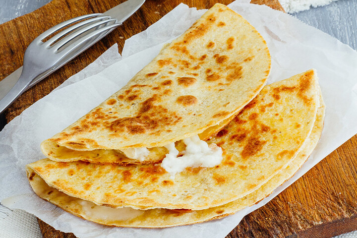

Quesadillas
Las quesadillas son un platillo tradicional mexicano que puede variar de lo más simple a lo más elaborado. Son rápidas de preparar y muy versátiles, ya que puedes rellenarlas con queso, hongos, flor de calabaza, tinga, chicharrón prensado o cualquier otro ingrediente que te guste. Pueden hacerse en comal, sartén o incluso fritas.
Ingredientes
- 8 tortillas de maíz
- 200 g de queso Oaxaca, panela o quesillo
- Aceite vegetal (opcional, si las quieres fritas)
- Rellenos al gusto (flor de calabaza, hongos, tinga, chicharrón, etc.)
- Salsa al gusto para acompañar
Preparación
- Calienta el comal o sartén a fuego medio.
- Coloca una tortilla y añade queso y el relleno que prefieras.
- Dobla la tortilla por la mitad, presionando ligeramente.
- Cocina por ambos lados hasta que el queso se derrita y la tortilla esté doradita.
- Si prefieres fritas, fríelas en aceite caliente por unos minutos hasta que estén crujientes.
- Sirve con salsa, crema o guacamole.